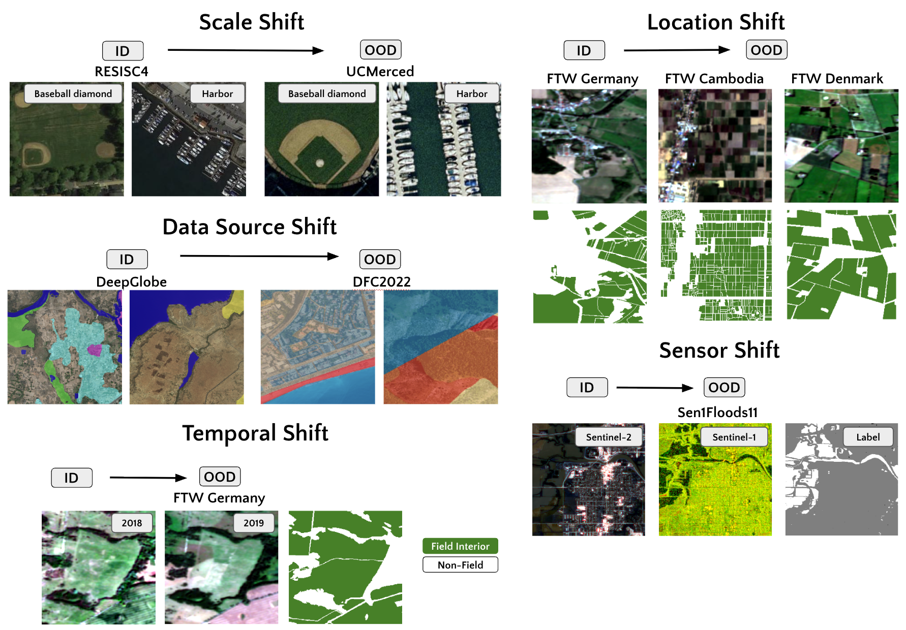
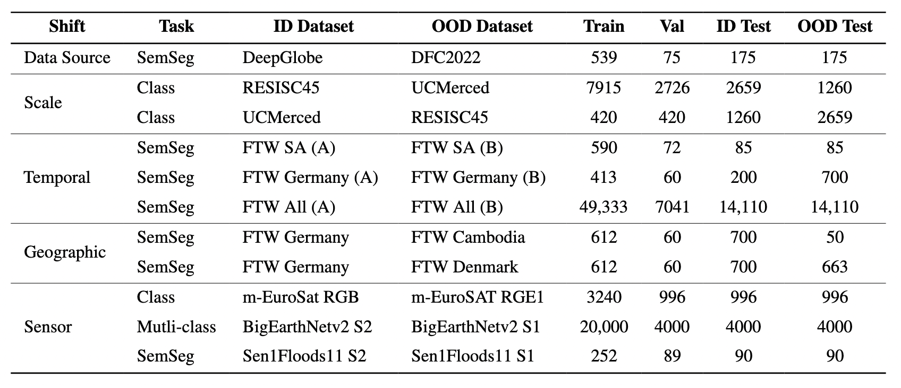
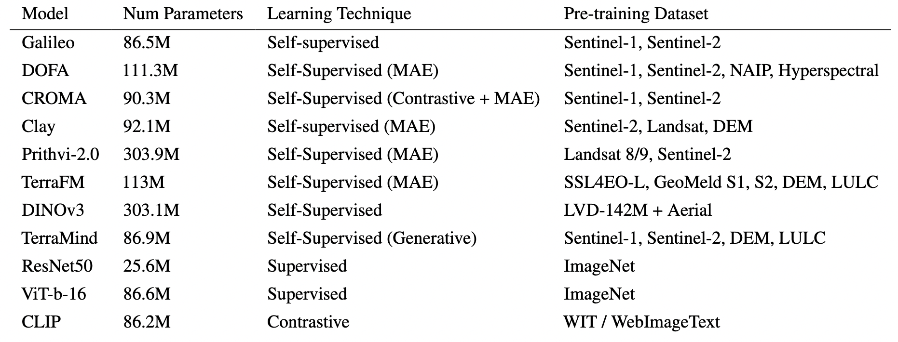
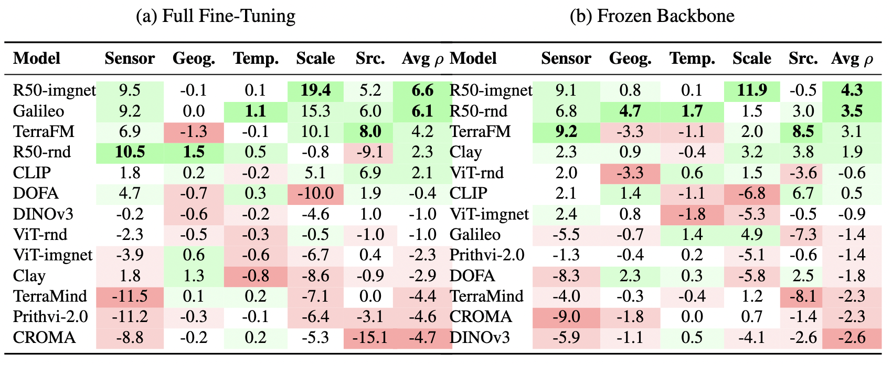

Figure 1. Representative samples of EarthShift distribution shifts. ID represents in-distribution data, OOD represents out-of-distribution data that exhibit a "shift" from the ID data.
Abstract
Current Earth observation benchmarks focus on measuring performance on diverse tasks and applications, typically measuring generalization in-distribution. But when models are deployed, they must generalize to myriad out-of-distribution scenarios, such as new time periods, geographies, scales, and sensors. We introduce EarthShift: the first public testbed for benchmarking robustness across multiple realistic distribution shifts encountered in remote sensing. EarthShift enables users to measure distributional robustness by comparing performance in- and out-of-distribution using datasets from paired datasets from different sources, temporal windows, geographic locations, and sensors. Our experiments on 8 geospatial foundation models (GFMs) and 11 tasks covering 5 shift types show that GFMs consistently perform around 20% worse out-of-distribution regardless of model architecture, size, pre-training or fine-tuning strategy. We show that GFM robustness is similar to that of generic vision foundation models, and even fully-supervised models. This highlights a need for future research to strive for improvements in distributional robustness, not just performance, which can be benchmarked using EarthShift. We release our code and datasets to provide a testbed to guide future work to create foundation models that are robust and reliable in real-world applications.
Datasets
EarthShift is built on paired datasets spanning 5 distribution shift types, enabling direct in-distribution vs. out-of-distribution comparison for each task.

Datasets included in EarthShift, organized by task type and shift category.
Models
We benchmark 8 geospatial foundation models (GFMs) alongside generic vision foundation models and fully-supervised baselines across 11 tasks and 5 shift types.

Geospatial foundation models (GFMs) and baselines evaluated in EarthShift.
Results
Effective robustness score per model (rows) and shift type (columns). Cells are colored from green (best) to red (worst); the highest score in each shift column is bolded. Models are ordered top-to-bottom by average ρ across shifts. Average ρ column is the average effective robustness (%) across all shifts. No single model dominates: in full fine-tuning the top three models each take rank 1 in at least one shift but never in more than two.

Model effective robustness scores.
BibTeX
If you find EarthShift useful in your research, please cite our paper:
@article{earthshift2025,
title = {EarthShift: a benchmark for measuring robustness to real-world distribution shifts in Earth observation},
author = {Kelsey Doerksen and Hannah Kerner},
journal = {arXiv preprint arXiv:XXXX.XXXXX},
year = {2026},
url = {https://arxiv.org/abs/XXXX.XXXXX}
}